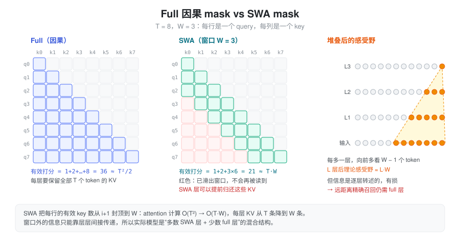
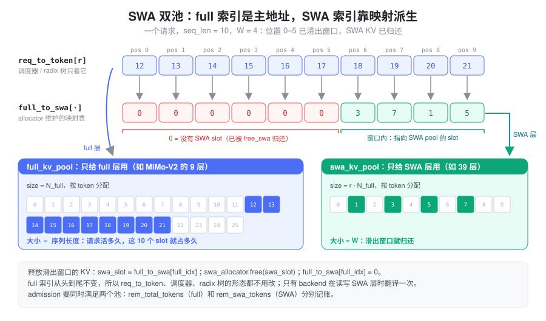
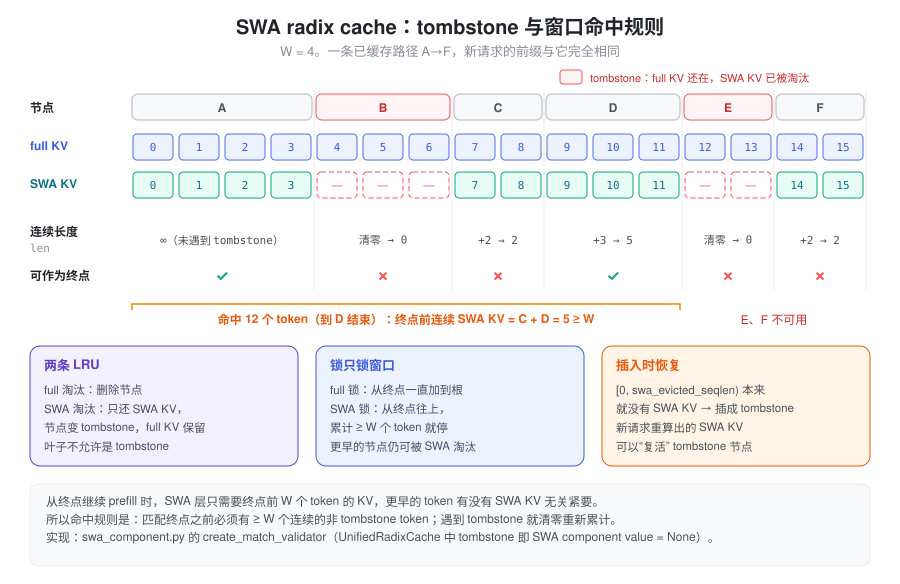

SWA（Sliding Window Attention）= 每个 query 只看最近 W 个 token。 这样每层 attention 的计算量从 O(T^2) 降到 O(TW)，每层需要保留的 KV 从 T 条降到 W 条。实际模型会把 SWA 层和 full attention 层混合堆叠，推理引擎为此要管理”同一个 token、两种寿命”的 KV。下文先讲要解决的问题和设计，再对照 SGLang 的实现。
问题：Full Attention 的两笔账都随 T 增长
记 batch 为 B，序列长度为 T，层数为 L，头数为 H，head dim 为 D。只算 attention 核心（QK^\top 和 AV），单层的开销如下：
| Full（因果） | SWA（窗口 W） | |
|---|---|---|
| prefill 计算量 | \approx 2BT^2HD | \approx 4BTWHD |
| decode 每步读 KV | \propto T | \propto W |
| KV cache 大小 | B L T (d_{qk} + d_v) H_{kv} | B L W (d_{qk} + d_v) H_{kv} |
Full attention 的因果 mask 是一个下三角，有效打分约 T^2/2 个，所以是 2BT^2HD。SWA 的每个 query 固定看 W 个 key，两者之比约为 2W/T。比如 T=32\text{K}、W=128 时，SWA 层的 attention 计算量和 KV 都不到 full 的 1%。
代价是看不到窗口外的信息。单层 SWA 只能看 W 个 token；堆叠 L 层后，信息可以一层层往后传，理论感受野约为 L \cdot W。但这种间接传递是有损的，“大海捞针”式的远距离精确召回仍然要靠能看全局的层。
设计：局部交给 SWA，全局交给少数 full 层

所以实际模型几乎都是混合结构：大部分层是 SWA，负责局部建模；每隔几层插一层 full attention，负责全局召回。
- GPT-OSS：
layer_types中sliding_attention和full_attention交替出现。 - MiMo-V2-Flash：48 层中 39 层 SWA、9 层
full，窗口 128，由
hybrid_layer_pattern指定。SWA 层和 full 层的 KV 头数不同（SWA 层 8 个，full 层 4 个）。 - Llama4：每 4 层中的前 3 层是 chunked local attention，第 4 层是全局 attention。
这类模型通常还会给 attention 加一个可学习的 sink（GPT-OSS、MiMo-V2 都有），让某个 query 在窗口内找不到相关 token 时，可以把权重”泄”到 sink 上，而不是被迫平均分给窗口内的 token。
混合结构带来了推理侧的核心问题：同一个 token 在不同层的 KV 寿命不同。 full 层的 KV 要跟着请求一直活下去，还可能被 prefix cache 复用；SWA 层的 KV 在它滑出窗口之后就再也不会被读到。如果所有层共用一个按 token 分配的 KV pool，SWA 层就会白白占着 T - W 条无用的 KV，混合结构省下来的显存全部浪费掉。
抽象：一个 token，两个地址
推理引擎的解法是把两种寿命拆到两个池里：
- full pool：只给 full 层用，按 token 分配，跟普通的 KV pool 一样，请求活多久它就活多久；
- SWA pool：只给 SWA 层用，也按 token 分配，但 token 滑出窗口后就立即归还。
关键是以 full
索引为主地址。调度器、req_to_token、radix
树看到的都只有 full 索引，和非 SWA 模型完全一样。SWA
索引则通过一张映射表 full_to_swa[full_idx]
派生出来，只有 attention backend 在读写 SWA
层时才需要翻译一次。
于是”释放某个 token 的 SWA KV”就变成两步：把
full_to_swa[full_idx] 指向的 SWA slot 还给 SWA
allocator，再把映射置 0。full
索引本身保持不变，上层的数据结构都不需要改。

这个抽象还顺带解决了”两个池谁先满”的问题：一个请求能否被调度，要同时看两个池的余量，两边分别记账、分别回收。
实现
以下路径都相对于 python/sglang/srt/。
哪些模型、哪些层
configs/model_config.py中的is_hybrid_swa_model是一个架构白名单，包括 GPT-OSS、Llama4、MiMo-V2、Step3p5、Gemma4、DeepSeek-V4 等。白名单内的模型，再由get_hybrid_layer_ids按各自的 config 字段（layer_types、hybrid_layer_pattern等）拆出swa_attention_layer_ids和full_attention_layer_ids。--disable-hybrid-swa-memory会关掉双池，模型退化成一个普通 pool。此时每层仍然按窗口计算 attention，只是 SWA 层的 KV 不再提前释放。Gemma2/3 在这个 fork 里就被强制走这条路。- 每一层的窗口大小通过
RadixAttention(sliding_window_size=...)传入，-1表示 full attention。注意 GPT-OSS、Gemma 的get_attention_sliding_window_size返回的是config.sliding_window - 1，即不含当前 token 的窗口长度。
双池与映射表
SWAKVPool（mem_cache/swa_memory_pool.py）：内部持有full_kv_pool和swa_kv_pool两个普通 KV pool。layers_mapping把全局 layer id 映射成(池内层号, 是否 SWA 层)，get_key_buffer等接口据此转发到对应的池。SWATokenToKVPoolAllocator（mem_cache/allocator/swa.py）：持有full_attn_allocator和swa_attn_allocator，以及映射表full_to_swa_index_mapping。- 映射表长度为
size + page_size + 1，值为 0 表示”没有 SWA slot”。末尾追加的-1是哨兵，让last_loc = -1翻译后仍是-1。 alloc/alloc_extend/alloc_decode在两个 allocator 中各分配同样数量的 slot，再写入映射。free先释放 full slot，再调用free_swa。free_swa只释放映射值大于 0 的 SWA slot，然后把映射置 0。因此先free_swa、后free不会重复释放。available_size()返回两个池余量的较小值。调度器的准入检查（managers/schedule_policy.py）也分别维护rem_total_tokens和rem_swa_tokens两份预算。
- 映射表长度为
显存怎么分：--swa-full-tokens-ratio
这个参数（默认 0.8）是每层的 token 数之比：SWA pool 的 token 容量 ÷ full pool 的 token 容量，与 SWA 层和 full 层的层数无关，也不是两者占用显存的比值。
model_executor/pool_configurator.py 中的
HybridSWAPoolConfigurator
按下面的方式求解两个池的大小（省略了投机解码 draft
层的项）：
\text{cell} = F \cdot L_{\text{full}} + r \cdot S \cdot L_{\text{swa}}, \qquad N_{\text{full}} = \left\lfloor \frac{\text{可用显存}}{\text{cell}} \right\rfloor, \qquad N_{\text{swa}} = r \cdot N_{\text{full}}
其中 F、S 分别是 full 层和 SWA 层单个
token、单层的 KV
字节数（num_kv_heads × (head_dim + v_head_dim) × dtype_size），两个结果都向下对齐到
page。记 page 大小为 P，如果 N_{\text{swa}} \le W + P，说明
SWA pool 连一个请求都放不下，启动时直接报错。
以 MiMo-V2-Flash 估算（假设两类层的 head dim 相同，于是 S = 2F）：
- 默认 r=0.8：cell = 9F + 0.8 \times 39 \times 2F = 71.4F，SWA pool 占了约 87% 的 KV 显存；
- 改成 r=0.05：cell = 12.9F，full pool 的 token 容量变成原来的约 5.5 倍。
那 r 至少要多大？对正在运行的请求，SWA 层只需保留约 W + I + P 个 token，其中 I 是下一节的释放间隔（默认 128）。假设平均序列长度为 \bar{T}，full pool 满载时大约有 N_{\text{full}}/\bar{T} 个请求，所需的 r 约为 (W + I + P) / \bar{T}，长上下文场景下只有百分之几。多出来的 SWA 容量用来给 radix cache 保留已缓存前缀的 SWA KV：r 越小，full pool 的并发越高，但 prefix cache 越容易因为 SWA KV 被淘汰而无法命中。
一些模型会改写默认值，例如 DeepSeek-V4 和 Inkling 改成
0.1（arg_groups/overrides.py，仅当用户没有显式设置时生效）。另外，这个
fork 有一条 SWAChunkCapPoolConfigurator
路径：在关闭 radix cache、开启 chunked prefill 并设置了
max_running_requests 时，SWA pool 按”每请求窗口
+ 余量”× 请求数直接封顶，剩下的显存全部给 full pool，此时
ratio 不生效。
运行时：把滑出窗口的 KV 还回去
每个请求在 req.kv.swa_evicted_seqlen
中记录”SWA KV 已经释放到哪个位置”。在
[0, swa_evicted_seqlen) 范围内，full 层的 KV
仍在，SWA 层的 KV 已经归还。
- 入口：
ScheduleBatch.maybe_evict_swa（managers/schedule_batch.py），在alloc_for_extend/alloc_for_decode以及投机解码的分配路径里调用。 - decode：不是每步都释放。只有当滑出窗口的
token 累积到
SGLANG_SWA_EVICTION_INTERVAL（默认 128）个以上时，才调用一次_evict_swa，以摊薄释放开销。这也是上面估算中要加上 interval 的原因。 - chunked prefill：chunk cache 模式下，每个 chunk 开始前把上一个 chunk 窗口以外的部分释放掉。开启 overlap 调度时要晚一个 chunk，因为上一个 extend batch 可能还在 GPU 上读这些 KV。
- 真正的释放逻辑在
mem_cache/common.py的free_swa_out_of_window_slots：- 下界是
cache_protected_len，即已经交给 radix 树管理的前缀，那部分由树负责回收； - 上界在 chunk cache 下是
pre_len - W，在 radix cache 下是pre_len - max(W, page_size)，保证最后一个叶子不会整段变成 tombstone； - 结果对齐到 page 后，对
req_to_token[req, old:new]调用free_swa，再推进swa_evicted_seqlen。
- 下界是
Prefix cache：tombstone 与窗口命中规则
普通 radix cache 的规则是：只要前缀在树里，就能复用。SWA 让这条规则变复杂了，因为树上一个节点可能处于”full KV 还在、SWA KV 已经被淘汰”的状态，这种节点称为 tombstone。
从匹配终点继续 prefill 时，SWA 层需要看到终点之前 W 个 token 的 KV；更早的 token 是否还有 SWA KV 无关紧要。所以命中规则是：匹配终点之前，必须有至少 W 个连续的非 tombstone token。 不满足时，匹配回退到上一个满足条件的位置。

围绕这个规则，树的其他操作也都分成 full 和 SWA 两份：
- 两条 LRU：full 淘汰会删掉节点；SWA 淘汰只释放节点的 SWA KV，把它变成 tombstone，full KV 继续留着。叶子节点不允许是 tombstone，否则就会出现”永远命中不了却占着 full KV”的节点。
- 锁也只锁窗口：请求使用某条前缀时，full 锁一直加到根节点；SWA 锁只从终点往上加到累计 W 个 token 为止，更早的节点仍然可以被 SWA 淘汰。
- 插入时恢复：请求结束后写回树时，
[0, swa_evicted_seqlen)这一段本来就没有 SWA KV，会被插成 tombstone 前缀；如果新请求重新算出了某个 tombstone 节点的 SWA KV，就用它把节点”复活”。
这个 fork 里，开启 radix cache 的混合 SWA 模型走的是
UnifiedRadixCache（mem_cache/unified_radix_cache.py），由
mem_cache/registry.py 以
[FULL, SWA] 两个 component 组合构造。SWA
的逻辑在
mem_cache/unified_cache/components/swa_component.py：tombstone
表示为该 component 的 value 为 None，命中规则在
create_match_validator 中实现，遇到 tombstone
时把累计长度清零，累计到 sliding_window_size
才算有效。早期独立实现的
SWARadixCache（mem_cache/swa_radix_cache.py，用
swa_tombstone 字段和 full_lru_list
/
swa_lru_list）仍保留在代码里，设计相同，但已经没有工厂函数会构造它。纯
SWA 模型（没有 full 层）则用
PureSWARadixCache。
Attention backend：读写前翻译一次索引
backend 拿到的
page_table、out_cache_loc 都是
full 索引。对 SWA 层，需要先用
SWAKVPool.translate_loc_from_full_to_swa（就是
full_to_swa_index_mapping[idx]）翻译成 SWA
索引：
- FlashAttention：每个 batch 准备
metadata 时，一次性算出
swa_page_table和swa_out_cache_loc。SWA 层用它们读写 KV，并把window_size=(sliding_window_size, 0)传给 kernel。 - FlashInfer：为 SWA 层和 full
层各准备一个 wrapper。SWA wrapper 把
seq_lens截断到W + 1，只把窗口内的那段 KV 索引翻译后交给 kernel。 - Triton：
update_sliding_window_buffer按min(seq_len, W)构造窗口内的window_kv_indices，再做翻译。
写 KV 时，backend 把 full 和 SWA 两个位置打包成
KVWriteLoc 交给 pool。SWA 层要求
swa_loc 已经翻译好，pool 内部不再翻译，这样一个
batch 只需翻译一次，所有 SWA 层共用。
小结
SWA 用固定窗口换掉了 full attention 随长度增长的计算和
KV，再用少数 full 层补回全局召回。推理侧的关键抽象是”一个
token、两个地址”：full 索引是唯一的主地址，SWA 索引通过
full_to_swa_index_mapping 派生，释放 SWA KV
只需归还 slot 并把映射置
0。这样调度器、req_to_token、radix
树都不用改变形态，只需要多维护一份 SWA
预算。--swa-full-tokens-ratio 决定两个池的
token 容量之比：它设得越大，越多 SWA KV 能留给 prefix
cache；设得越小，full pool 的并发越高。prefix cache 则通过
tombstone 和”终点前 W 个
token 连续有效”的命中规则，让两种寿命的 KV
共存在同一棵树上。